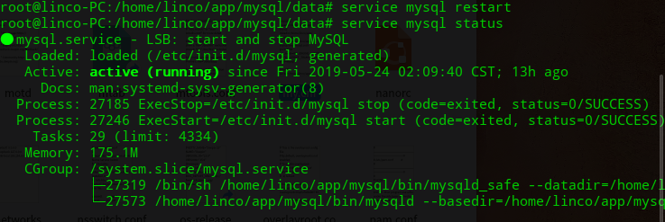
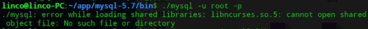
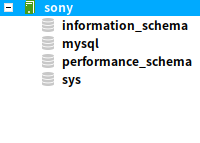
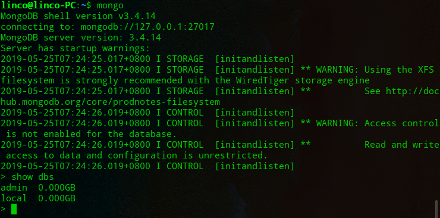
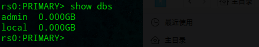
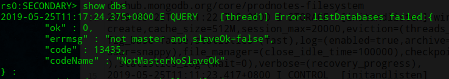

<!DOCTYPE html>
<html lang class="loading">
<head><meta name="generator" content="Hexo 3.8.0">
    <meta charset="UTF-8">
    <meta http-equiv="X-UA-Compatible" content="IE=edge,chrome=1">
    <meta name="viewport" content="width=device-width, minimum-scale=1.0, maximum-scale=1.0, user-scalable=no">
    <title>组件部署集成-一-mysql和mongodb安装配置 - Linco</title>
    <meta name="apple-mobile-web-app-capable" content="yes">
    <meta name="apple-mobile-web-app-status-bar-style" content="black-translucent">
    <meta name="google" content="notranslate">
    <meta name="keywords" content="Linco, Blog,"> 
    <meta name="description" content="一 mysql如果使用了阿里云的apt镜像源, 直接通过apt安装
apt-get install mysql-server
​    
下面讨论手动安装的方案
到官网下载新版的 mysql 安装包,"> 
    <meta name="author" content="Linco"> 
    <link rel="alternative" href="atom.xml" title="Linco" type="application/atom+xml"> 
    <link rel="icon" href="/img/icon.png"> 
    <link rel="stylesheet" href="//cdn.jsdelivr.net/npm/gitalk@1/dist/gitalk.css">
    <link rel="stylesheet" href="/css/diaspora.css">

</head>
</html>
<body class="loading">
    <span id="config-title" style="display:none">Linco</span>
    <div id="loader"></div>
    <div id="single">
    <div id="top" style="display: block;">
    <div class="bar" style="width: 0;"></div>
    <a class="icon-home image-icon" href="javascript:;" data-url></a>
    <div title="播放/暂停" class="icon-play"></div>
    <h3 class="subtitle">组件部署集成-一-mysql和mongodb安装配置</h3>
    <div class="social">
        <!--<div class="like-icon">-->
            <!--<a href="javascript:;" class="likeThis active"><span class="icon-like"></span><span class="count">76</span></a>-->
        <!--</div>-->
        <div>
            <div class="share">
                <a title="获取二维码" class="icon-scan" href="javascript:;"></a>
            </div>
            <div id="qr"></div>
        </div>
    </div>
    <div class="scrollbar"></div>
</div>

    <div class="section">
        <div class="article">
    <div class="main">
        <h1 class="title">组件部署集成-一-mysql和mongodb安装配置</h1>
        <div class="stuff">
            <span>五月 22, 2019</span>
            
  <ul class="post-tags-list"><li class="post-tags-list-item"><a class="post-tags-list-link" href="/tags/Mysql/">Mysql</a></li><li class="post-tags-list-item"><a class="post-tags-list-link" href="/tags/mongodb/">mongodb</a></li></ul>


        </div>
        <div class="content markdown">
            <h4 id="一-mysql"><a href="#一-mysql" class="headerlink" title="一 mysql"></a>一 mysql</h4><p>如果使用了阿里云的apt镜像源, 直接通过apt安装</p>
<p><code>apt-get install mysql-server</code></p>
<p>​    </p>
<p><strong>下面讨论手动安装的方案</strong></p>
<p>到<a href="https://dev.mysql.com" target="_blank" rel="noopener">官网</a>下载新版的 mysql 安装包, 选择tar.gz格式的社区版, 嫌麻烦的话直接<a href="https://dev.mysql.com/get/Downloads/MySQL-5.7/mysql-5.7.22-linux-glibc2.12-x86_64.tar.gz" target="_blank" rel="noopener">点这里是5.7版本</a>, 非图形界面复制下载链接,  wget 下载.</p>
<p>把下载的tar文件 mv 到要安装的文件夹, 然后执行解压</p>
<figure class="highlight plain"><table><tr><td class="gutter"><pre><span class="line">1</span><br></pre></td><td class="code"><pre><span class="line"># tar -xvf (文件名).tar.gz</span><br></pre></td></tr></table></figure>
<p>创建数据库用户</p>
<figure class="highlight plain"><table><tr><td class="gutter"><pre><span class="line">1</span><br><span class="line">2</span><br></pre></td><td class="code"><pre><span class="line">groupadd mysql</span><br><span class="line">useradd -r -g mysql mysql</span><br></pre></td></tr></table></figure>
<p>​    </p>
<p>创建存放数据库的文件夹, 默认路径在/usr/local/mysql/data 下不建议采用</p>
<figure class="highlight plain"><table><tr><td class="gutter"><pre><span class="line">1</span><br></pre></td><td class="code"><pre><span class="line">mkdir data</span><br></pre></td></tr></table></figure>
<p>​    </p>
<p>初始化前先设置好权限, 这步很关键</p>
<figure class="highlight plain"><table><tr><td class="gutter"><pre><span class="line">1</span><br><span class="line">2</span><br></pre></td><td class="code"><pre><span class="line">chown -R root .</span><br><span class="line">chown -R mysql:mysql data</span><br></pre></td></tr></table></figure>
<p>​    </p>
<p>进入bin目录, 执行初始化, 涉及记得替换为自己的路径</p>
<figure class="highlight plain"><table><tr><td class="gutter"><pre><span class="line">1</span><br></pre></td><td class="code"><pre><span class="line">./mysqld --basedir=/home/linco/app/mysql --datadir=/home/linco/app/mysql/data --initialize</span><br></pre></td></tr></table></figure>
<p>这时候会显示初始化的 root 密码, 记下来</p>
<p>​    </p>
<p>配置 my.cnf, 直接 vim 一个新文件</p>
<figure class="highlight plain"><table><tr><td class="gutter"><pre><span class="line">1</span><br></pre></td><td class="code"><pre><span class="line">sudo vim /etc/my.cnf</span><br></pre></td></tr></table></figure>
<p>​    </p>
<p>配置如下, 按你的目录结构改一下</p>
<figure class="highlight plain"><table><tr><td class="gutter"><pre><span class="line">1</span><br><span class="line">2</span><br><span class="line">3</span><br><span class="line">4</span><br><span class="line">5</span><br><span class="line">6</span><br><span class="line">7</span><br><span class="line">8</span><br><span class="line">9</span><br><span class="line">10</span><br><span class="line">11</span><br><span class="line">12</span><br><span class="line">13</span><br><span class="line">14</span><br><span class="line">15</span><br><span class="line">16</span><br><span class="line">17</span><br><span class="line">18</span><br><span class="line">19</span><br><span class="line">20</span><br></pre></td><td class="code"><pre><span class="line">[mysqld]</span><br><span class="line">basedir=/home/linco/app/mysql</span><br><span class="line">datadir=/home/linco/app/mysql/data</span><br><span class="line">socket=/home/linco/app/mysql/tmp/mysql.sock</span><br><span class="line">port=3306</span><br><span class="line">sql_mode=NO_ENGINE_SUBSTITUTION,STRICT_TRANS_TABLES</span><br><span class="line">user=mysql</span><br><span class="line"></span><br><span class="line">[client]</span><br><span class="line">socket=/home/linco/app/mysql/tmp/mysql.sock</span><br><span class="line"></span><br><span class="line">[mysqld_safe]</span><br><span class="line"></span><br><span class="line">basedir=/home/linco/app/mysql</span><br><span class="line">datadir=/home/linco/app/mysql/data</span><br><span class="line">socket=/home/linco/app/mysql/tmp/mysql.sock</span><br><span class="line">port=3306</span><br><span class="line">sql_mode=NO_ENGINE_SUBSTITUTION,STRICT_TRANS_TABLES</span><br><span class="line"></span><br><span class="line">user=mysql</span><br></pre></td></tr></table></figure>
<p>​    </p>
<p>这里有个socket参数, 我写的值是data下的tmp目录</p>
<p>所以给它建立tmp目录并授权</p>
<figure class="highlight plain"><table><tr><td class="gutter"><pre><span class="line">1</span><br><span class="line">2</span><br><span class="line">3</span><br></pre></td><td class="code"><pre><span class="line">cd ~/app/mysql/data</span><br><span class="line">mkdir tmp</span><br><span class="line">chown -R mysql:mysql tmp</span><br></pre></td></tr></table></figure>
<p>​    </p>
<p>然后创建mysql服务, 按需要设置开机启动, 设置完记得得在 systemctl 启用服务</p>
<figure class="highlight plain"><table><tr><td class="gutter"><pre><span class="line">1</span><br><span class="line">2</span><br></pre></td><td class="code"><pre><span class="line">cp ~/app/mysql/support-files/mysql.server /etc/init.d/mysql</span><br><span class="line">sudo systemctl enable mysql.service</span><br></pre></td></tr></table></figure>
<p>​    </p>
<p>尝试运行</p>
<figure class="highlight plain"><table><tr><td class="gutter"><pre><span class="line">1</span><br></pre></td><td class="code"><pre><span class="line">service mysql start</span><br></pre></td></tr></table></figure>
<p></p>
<p>​    </p>
<p>打开一个 mysql 连接, 开始设置, 记得要在安装机器上操作</p>
<figure class="highlight plain"><table><tr><td class="gutter"><pre><span class="line">1</span><br></pre></td><td class="code"><pre><span class="line">mysql -u root -p</span><br></pre></td></tr></table></figure>
<p></p>
<p>​    </p>
<p>如果出现上面的错误, 安装 libncurses5:i386 解决</p>
<p>设置密码和开放其他ip连接</p>
<figure class="highlight plain"><table><tr><td class="gutter"><pre><span class="line">1</span><br><span class="line">2</span><br><span class="line">3</span><br><span class="line">4</span><br><span class="line">5</span><br><span class="line">6</span><br><span class="line">7</span><br></pre></td><td class="code"><pre><span class="line">use mysql;</span><br><span class="line"></span><br><span class="line">update user set host=&apos;%&apos; where user = &quot;root&quot;;</span><br><span class="line"></span><br><span class="line">alter user &apos;root&apos;@&apos;%&apos; identified by&apos;your password&apos;;</span><br><span class="line"></span><br><span class="line">flush privileges;</span><br></pre></td></tr></table></figure>
<p>打开其他机器上的 Navicat 连接成功</p>
<p></p>
<p>​    </p>
<p>需要更多的配置. 找到  /etc/my.cnf 文件修改</p>
<p>​    </p>
<p>如果 mysql -u root -p登录不上, 排查 mysql 的运行状态</p>
<figure class="highlight plain"><table><tr><td class="gutter"><pre><span class="line">1</span><br><span class="line">2</span><br><span class="line">3</span><br></pre></td><td class="code"><pre><span class="line">ps -ef|grep mysql</span><br><span class="line">service mysql status</span><br><span class="line">mysqld --user=mysql</span><br></pre></td></tr></table></figure>
<p>​    </p>
<p>​    </p>
<h4 id="二-MongoDB安装和配置副本集模式"><a href="#二-MongoDB安装和配置副本集模式" class="headerlink" title="二 MongoDB安装和配置副本集模式"></a>二 MongoDB安装和配置副本集模式</h4><p>​    </p>
<h5 id="mongodb-安装和单机配置"><a href="#mongodb-安装和单机配置" class="headerlink" title="mongodb 安装和单机配置"></a>mongodb 安装和单机配置</h5><p>​    </p>
<p>建议在docker内运行mongodb</p>
<p>​    </p>
<p>最简单的方法是通过包管理直接安装</p>
<figure class="highlight plain"><table><tr><td class="gutter"><pre><span class="line">1</span><br></pre></td><td class="code"><pre><span class="line">sudo apt-get install mongodb</span><br></pre></td></tr></table></figure>
<p>​    </p>
<p>安装完会自动启动服务</p>
<figure class="highlight plain"><table><tr><td class="gutter"><pre><span class="line">1</span><br><span class="line">2</span><br></pre></td><td class="code"><pre><span class="line">mongo</span><br><span class="line">show dbs</span><br></pre></td></tr></table></figure>
<p>如果正常的话, 能够看到初始的两个空db</p>
<p></p>
<p>​    </p>
<p>接下来进行mongo的配置, 非图形界面用vim代替gedit</p>
<figure class="highlight plain"><table><tr><td class="gutter"><pre><span class="line">1</span><br></pre></td><td class="code"><pre><span class="line">sudo gedit /etc/mongodb.conf</span><br></pre></td></tr></table></figure>
<p>​    </p>
<p>配置文件的解释如下</p>
<figure class="highlight plain"><table><tr><td class="gutter"><pre><span class="line">1</span><br><span class="line">2</span><br><span class="line">3</span><br><span class="line">4</span><br><span class="line">5</span><br><span class="line">6</span><br><span class="line">7</span><br><span class="line">8</span><br><span class="line">9</span><br><span class="line">10</span><br><span class="line">11</span><br><span class="line">12</span><br><span class="line">13</span><br><span class="line">14</span><br><span class="line">15</span><br><span class="line">16</span><br><span class="line">17</span><br><span class="line">18</span><br><span class="line">19</span><br><span class="line">20</span><br><span class="line">21</span><br><span class="line">22</span><br><span class="line">23</span><br><span class="line">24</span><br><span class="line">25</span><br><span class="line">26</span><br><span class="line">27</span><br><span class="line">28</span><br><span class="line">29</span><br><span class="line">30</span><br><span class="line">31</span><br><span class="line">32</span><br><span class="line">33</span><br><span class="line">34</span><br><span class="line">35</span><br><span class="line">36</span><br><span class="line">37</span><br><span class="line">38</span><br><span class="line">39</span><br><span class="line">40</span><br><span class="line">41</span><br><span class="line">42</span><br><span class="line">43</span><br><span class="line">44</span><br><span class="line">45</span><br><span class="line">46</span><br><span class="line">47</span><br><span class="line">48</span><br><span class="line">49</span><br><span class="line">50</span><br><span class="line">51</span><br><span class="line">52</span><br><span class="line">53</span><br><span class="line">54</span><br><span class="line">55</span><br><span class="line">56</span><br><span class="line">57</span><br><span class="line">58</span><br><span class="line">59</span><br><span class="line">60</span><br><span class="line">61</span><br><span class="line">62</span><br><span class="line">63</span><br><span class="line">64</span><br></pre></td><td class="code"><pre><span class="line">#日志文件位置</span><br><span class="line">logpath=/data/db/journal/mongodb.log　　（这些都是可以自定义修改的）</span><br><span class="line"></span><br><span class="line"># 以追加方式写入日志</span><br><span class="line">logappend=true</span><br><span class="line"></span><br><span class="line"># 是否以守护进程方式运行</span><br><span class="line">fork = true</span><br><span class="line"></span><br><span class="line"># 默认27017</span><br><span class="line"># port = 27017</span><br><span class="line"></span><br><span class="line"># 数据库文件位置</span><br><span class="line">dbpath=/data/db</span><br><span class="line"></span><br><span class="line"># 启用定期记录CPU利用率和 I/O 等待</span><br><span class="line"># cpu = true</span><br><span class="line"></span><br><span class="line"># 是否以安全认证方式运行，默认是不认证的非安全方式</span><br><span class="line"># noauth = true</span><br><span class="line"># auth = true</span><br><span class="line"></span><br><span class="line"># 详细记录输出</span><br><span class="line"># verbose = true</span><br><span class="line"></span><br><span class="line"># Inspect all client data for validity on receipt (useful for</span><br><span class="line"># developing drivers)用于开发驱动程序时验证客户端请求</span><br><span class="line"># objcheck = true</span><br><span class="line"></span><br><span class="line"># Enable db quota management</span><br><span class="line"># 启用数据库配额管理</span><br><span class="line"># quota = true</span><br><span class="line"># 设置oplog记录等级</span><br><span class="line"># Set oplogging level where n is</span><br><span class="line">#   0=off (default)</span><br><span class="line">#   1=W</span><br><span class="line">#   2=R</span><br><span class="line">#   3=both</span><br><span class="line">#   7=W+some reads</span><br><span class="line"># diaglog=0</span><br><span class="line"></span><br><span class="line"># Diagnostic/debugging option 动态调试项</span><br><span class="line"># nocursors = true</span><br><span class="line"></span><br><span class="line"># Ignore query hints 忽略查询提示</span><br><span class="line"># nohints = true</span><br><span class="line"># 禁用http界面，默认为localhost：28017</span><br><span class="line"># nohttpinterface = true</span><br><span class="line"></span><br><span class="line"># 关闭服务器端脚本，这将极大的限制功能</span><br><span class="line"># Turns off server-side scripting.  This will result in greatly limited</span><br><span class="line"># functionality</span><br><span class="line"># noscripting = true</span><br><span class="line"># 关闭扫描表，任何查询将会是扫描失败</span><br><span class="line"># Turns off table scans.  Any query that would do a table scan fails.</span><br><span class="line"># notablescan = true</span><br><span class="line"># 关闭数据文件预分配</span><br><span class="line"># Disable data file preallocation.</span><br><span class="line"># noprealloc = true</span><br><span class="line"># 为新数据库指定.ns文件的大小，单位:MB</span><br><span class="line"># Specify .ns file size for new databases.</span><br><span class="line"># nssize =</span><br><span class="line"></span><br><span class="line"># Replication Options 复制选项, 待运行时配置</span><br></pre></td></tr></table></figure>
<p>​    </p>
<p>一般来说, 修改端口号, 日志路径和数据库路径, 其他可选</p>
<p>​    </p>
<p>有一个参数要加上, 因为mongodb默认使用系统50%的内存做缓存(下限1G, 两者取大), 加上其他功能, 单个mongo进程占用的内存能轻易超过可用内存的50%, 如果系统还有其他服务,很容易造成频繁换页影响性能, 甚至直接OOM  </p>
<figure class="highlight plain"><table><tr><td class="gutter"><pre><span class="line">1</span><br><span class="line">2</span><br><span class="line">3</span><br><span class="line">4</span><br><span class="line">5</span><br><span class="line">6</span><br><span class="line">7</span><br><span class="line">8</span><br><span class="line">9</span><br><span class="line">10</span><br></pre></td><td class="code"><pre><span class="line">wiredTigerCacheSizeGB=1</span><br><span class="line"></span><br><span class="line"># wiredTiger.engineConfig.cacheSizeGB=1 // 另一种配置</span><br><span class="line"></span><br><span class="line">// yml 使用</span><br><span class="line">storage:</span><br><span class="line"> engine: wiredTiger</span><br><span class="line"> wiredTiger:</span><br><span class="line">  engineConfig:</span><br><span class="line">   cacheSizeGB: 1</span><br></pre></td></tr></table></figure>
<p>这里的cacheSizeGB 指的就是Cache size，包括数据和索引。Mongod本身使用内存如连接池堆栈以及sorting buffer等都是额外的，不会被统计到这个数字里面。即便这样, cacheSize仍旧是控制mongodb内存占用的关键</p>
<p>​    </p>
<p>sorting buffer 是mongo另一个快速收缩膨胀的内存空间, 所以执行mongo大量数据排序的话, 需要在操作中使用硬盘排序</p>
<p>​    </p>
<p>综上, mongodb 能够接近最大程度占用主机资源, 所以实际环境中mongodb进程应该在独立机器上运行, 如果不采用机器, 推荐Docker部署</p>
<p>​    </p>
<h5 id="配置集群-副本集"><a href="#配置集群-副本集" class="headerlink" title="配置集群 (副本集)"></a>配置集群 (副本集)</h5><p>按上面配置后, 我们已经有一个可供学习测试用的 mongodb 数据库了. 但为了提升系统的可用性, 我们需要配置集群</p>
<p>​    </p>
<p>mongodb 只有配置了集群才能发挥分布式的优势, 新版本推荐使用副本集模式集群而非主从模式, 并且<strong>只有以副本集运行的mongo集群支持多文档事务</strong></p>
<p>​    </p>
<p>先移除自动启动服务</p>
<figure class="highlight plain"><table><tr><td class="gutter"><pre><span class="line">1</span><br></pre></td><td class="code"><pre><span class="line">sudo systemctl disable mongodb</span><br></pre></td></tr></table></figure>
<p>​    </p>
<p>停止自动启动的mongo进程</p>
<figure class="highlight plain"><table><tr><td class="gutter"><pre><span class="line">1</span><br></pre></td><td class="code"><pre><span class="line">service mongodb stop</span><br></pre></td></tr></table></figure>
<p>​    </p>
<p>写两个conf文件, 记得按参数建立文件夹</p>
<figure class="highlight plain"><table><tr><td class="gutter"><pre><span class="line">1</span><br><span class="line">2</span><br><span class="line">3</span><br><span class="line">4</span><br><span class="line">5</span><br><span class="line">6</span><br><span class="line">7</span><br><span class="line">8</span><br><span class="line">9</span><br><span class="line">10</span><br><span class="line">11</span><br><span class="line">12</span><br><span class="line">13</span><br><span class="line">14</span><br><span class="line">15</span><br><span class="line">16</span><br><span class="line">17</span><br><span class="line">18</span><br><span class="line">19</span><br></pre></td><td class="code"><pre><span class="line">systemLog:</span><br><span class="line">   destination: file</span><br><span class="line">   path: &quot;/home/linco/data/mongo/service_1/log/mongod.log&quot;</span><br><span class="line">   logAppend: true</span><br><span class="line">storage:</span><br><span class="line">   dbPath: &quot;/home/linco/data/mongo/service_1/data&quot;</span><br><span class="line">   engine: wiredTiger</span><br><span class="line">   wiredTiger:</span><br><span class="line">      engineConfig:</span><br><span class="line">         cacheSizeGB: 0.5</span><br><span class="line">processManagement:</span><br><span class="line">   fork: true</span><br><span class="line">   pidFilePath: &quot;/home/linco/data/mongo/service_1/log/mongod.pid&quot; # pid文件路径</span><br><span class="line">net:</span><br><span class="line">   bindIp: 127.0.0.1</span><br><span class="line">   port: 27017</span><br><span class="line">replication: #复制集相关</span><br><span class="line">   oplogSizeMB: 50</span><br><span class="line">   replSetName: rs0</span><br></pre></td></tr></table></figure>
<figure class="highlight plain"><table><tr><td class="gutter"><pre><span class="line">1</span><br><span class="line">2</span><br><span class="line">3</span><br><span class="line">4</span><br><span class="line">5</span><br><span class="line">6</span><br><span class="line">7</span><br><span class="line">8</span><br><span class="line">9</span><br><span class="line">10</span><br><span class="line">11</span><br><span class="line">12</span><br><span class="line">13</span><br><span class="line">14</span><br><span class="line">15</span><br><span class="line">16</span><br><span class="line">17</span><br><span class="line">18</span><br><span class="line">19</span><br></pre></td><td class="code"><pre><span class="line">systemLog:</span><br><span class="line">   destination: file</span><br><span class="line">   path: &quot;/home/linco/data/mongo/service_2/log/mongod.log&quot;</span><br><span class="line">   logAppend: true</span><br><span class="line">storage:</span><br><span class="line">   dbPath: &quot;/home/linco/data/mongo/service_2/data&quot;</span><br><span class="line">   engine: wiredTiger</span><br><span class="line">   wiredTiger:</span><br><span class="line">      engineConfig:</span><br><span class="line">         cacheSizeGB: 0.5</span><br><span class="line">processManagement:</span><br><span class="line">   fork: true</span><br><span class="line">   pidFilePath: &quot;/home/linco/data/mongo/service_2/log/mongod.pid&quot; # pid文件路径</span><br><span class="line">net:</span><br><span class="line">   bindIp: 127.0.0.1</span><br><span class="line">   port: 27019</span><br><span class="line">replication: #复制集相关</span><br><span class="line">   oplogSizeMB: 50</span><br><span class="line">   replSetName: rs0</span><br></pre></td></tr></table></figure>
<p>​    </p>
<p>mongo连接其中一台, 注册副本集</p>
<figure class="highlight plain"><table><tr><td class="gutter"><pre><span class="line">1</span><br><span class="line">2</span><br><span class="line">3</span><br><span class="line">4</span><br><span class="line">5</span><br><span class="line">6</span><br><span class="line">7</span><br><span class="line">8</span><br><span class="line">9</span><br><span class="line">10</span><br></pre></td><td class="code"><pre><span class="line">rs.initiate(&#123;&quot;_id&quot;:&quot;rs0&quot;,&quot;members&quot;:[</span><br><span class="line">    &#123;&quot;_id&quot;:1,</span><br><span class="line">		&quot;host&quot;:&quot;127.0.0.1:27017&quot;,</span><br><span class="line">		&quot;priority&quot;:1</span><br><span class="line">    &#125;,</span><br><span class="line">	&#123;&quot;_id&quot;:2,</span><br><span class="line">		&quot;host&quot;:&quot;127.0.0.1:27019&quot;,</span><br><span class="line">		&quot;priority&quot;:1</span><br><span class="line">	&#125;</span><br><span class="line">]&#125;)</span><br></pre></td></tr></table></figure>
<p>​    </p>
<p>分别测试, 结果是一台可读写一台受限, 和预期相符</p>
<p></p>
<p></p>
<p>​    </p>
<p>连接的rs对象还提供副本集的各种维护功能, 比如</p>
<figure class="highlight plain"><table><tr><td class="gutter"><pre><span class="line">1</span><br></pre></td><td class="code"><pre><span class="line">rs.add(&quot;127.0.0.1:27017&quot;)</span><br></pre></td></tr></table></figure>
<p>​    </p>
<p>配置好副本集了, 除了稳定性安全性的提升, 还有一个很直接的用途就是 mongo4.0+的事务属性, 看<a href="/">这里</a></p>
<p>​    </p>
<h5 id="附-yml-配置参考"><a href="#附-yml-配置参考" class="headerlink" title="附 yml 配置参考"></a>附 yml 配置参考</h5><figure class="highlight yaml"><table><tr><td class="gutter"><pre><span class="line">1</span><br><span class="line">2</span><br><span class="line">3</span><br><span class="line">4</span><br><span class="line">5</span><br><span class="line">6</span><br><span class="line">7</span><br><span class="line">8</span><br><span class="line">9</span><br><span class="line">10</span><br><span class="line">11</span><br><span class="line">12</span><br><span class="line">13</span><br><span class="line">14</span><br><span class="line">15</span><br><span class="line">16</span><br><span class="line">17</span><br><span class="line">18</span><br><span class="line">19</span><br><span class="line">20</span><br><span class="line">21</span><br><span class="line">22</span><br><span class="line">23</span><br><span class="line">24</span><br><span class="line">25</span><br><span class="line">26</span><br><span class="line">27</span><br><span class="line">28</span><br><span class="line">29</span><br><span class="line">30</span><br><span class="line">31</span><br><span class="line">32</span><br><span class="line">33</span><br><span class="line">34</span><br><span class="line">35</span><br><span class="line">36</span><br><span class="line">37</span><br><span class="line">38</span><br><span class="line">39</span><br><span class="line">40</span><br><span class="line">41</span><br><span class="line">42</span><br><span class="line">43</span><br><span class="line">44</span><br><span class="line">45</span><br><span class="line">46</span><br><span class="line">47</span><br><span class="line">48</span><br><span class="line">49</span><br><span class="line">50</span><br><span class="line">51</span><br><span class="line">52</span><br><span class="line">53</span><br><span class="line">54</span><br><span class="line">55</span><br><span class="line">56</span><br><span class="line">57</span><br><span class="line">58</span><br><span class="line">59</span><br><span class="line">60</span><br><span class="line">61</span><br><span class="line">62</span><br><span class="line">63</span><br><span class="line">64</span><br><span class="line">65</span><br><span class="line">66</span><br><span class="line">67</span><br><span class="line">68</span><br><span class="line">69</span><br><span class="line">70</span><br><span class="line">71</span><br><span class="line">72</span><br><span class="line">73</span><br><span class="line">74</span><br><span class="line">75</span><br><span class="line">76</span><br><span class="line">77</span><br><span class="line">78</span><br><span class="line">79</span><br><span class="line">80</span><br><span class="line">81</span><br><span class="line">82</span><br><span class="line">83</span><br><span class="line">84</span><br><span class="line">85</span><br><span class="line">86</span><br><span class="line">87</span><br><span class="line">88</span><br><span class="line">89</span><br><span class="line">90</span><br><span class="line">91</span><br><span class="line">92</span><br><span class="line">93</span><br><span class="line">94</span><br><span class="line">95</span><br><span class="line">96</span><br><span class="line">97</span><br><span class="line">98</span><br><span class="line">99</span><br><span class="line">100</span><br><span class="line">101</span><br><span class="line">102</span><br><span class="line">103</span><br><span class="line">104</span><br><span class="line">105</span><br><span class="line">106</span><br><span class="line">107</span><br><span class="line">108</span><br><span class="line">109</span><br><span class="line">110</span><br><span class="line">111</span><br><span class="line">112</span><br><span class="line">113</span><br><span class="line">114</span><br><span class="line">115</span><br><span class="line">116</span><br><span class="line">117</span><br><span class="line">118</span><br><span class="line">119</span><br></pre></td><td class="code"><pre><span class="line"><span class="attr">systemLog:</span></span><br><span class="line">   <span class="comment"># verbosity: 0  #日志等级，0-5，默认0</span></span><br><span class="line">   <span class="comment"># quiet: false  #限制日志输出，</span></span><br><span class="line">   <span class="comment"># traceAllExceptions: true  #详细错误日志</span></span><br><span class="line">   <span class="comment"># syslogFacility: user #记录到操作系统的日志级别，指定的值必须是操作系统支持的，并且要以--syslog启动</span></span><br><span class="line"><span class="attr">   path:</span> <span class="string">/Users/mhq/projects/db/mongo/logs/log.txt</span>  <span class="comment">#日志路径。</span></span><br><span class="line"><span class="attr">   logAppend:</span> <span class="literal">false</span> <span class="comment">#启动时，日志追加在已有日志文件内还是备份旧日志后，创建新文件记录日志, 默认false</span></span><br><span class="line"><span class="attr">   logRotate:</span> <span class="string">rename</span> <span class="comment">#rename/reopen。rename，重命名旧日志文件，创建新文件记录；reopen，重新打开旧日志记录，需logAppend为true</span></span><br><span class="line"><span class="attr">   destination:</span> <span class="string">file</span> <span class="comment">#日志输出方式。file/syslog,如果是file，需指定path，默认是输出到标准输出流中</span></span><br><span class="line"><span class="attr">   timeStampFormat:</span> <span class="string">iso8601-local</span> <span class="comment">#日志日期格式。ctime/iso8601-utc/iso8601-local, 默认iso8601-local</span></span><br><span class="line">   <span class="comment"># component: #各组件的日志级别</span></span><br><span class="line">   <span class="comment">#    accessControl:</span></span><br><span class="line">   <span class="comment">#       verbosity: &lt;int&gt;</span></span><br><span class="line">   <span class="comment">#    command:</span></span><br><span class="line">   <span class="comment">#       verbosity: &lt;int&gt;</span></span><br><span class="line"></span><br><span class="line"><span class="attr">processManagement:</span></span><br><span class="line"><span class="attr">   fork:</span> <span class="literal">true</span> <span class="comment">#以守护进程运行 默认false</span></span><br><span class="line">   <span class="comment"># pidFilePath: &lt;string&gt; #PID 文件位置</span></span><br><span class="line"></span><br><span class="line"><span class="attr">net:</span></span><br><span class="line"><span class="attr">   port:</span> <span class="number">27017</span> <span class="comment">#监听端口，默认27017</span></span><br><span class="line"><span class="attr">   bindIp:</span> <span class="number">127.0</span><span class="number">.0</span><span class="number">.1</span> <span class="comment">#绑定监听的ip，deb和rpm包里有默认的配置文件(/etc/mongod.conf)里面默认配置为127.0.0.1,若不限制IP，务必确保认证安全，多个Ip用逗号分隔</span></span><br><span class="line"><span class="attr">   maxIncomingConnections:</span> <span class="number">65536</span> <span class="comment">#最大连接数，可接受的连接数还受限于操作系统配置的最大连接数</span></span><br><span class="line"><span class="attr">   wireObjectCheck:</span> <span class="literal">true</span> <span class="comment">#校验客户端的请求，防止错误的或无效BSON插入,多层文档嵌套的对象会有轻微性能影响,默认true</span></span><br><span class="line"><span class="attr">   ipv6:</span> <span class="literal">false</span> <span class="comment">#是否启用ipv6,3.0以上版本始终开启</span></span><br><span class="line"><span class="attr">   unixDomainSocket:</span> <span class="comment">#unix socket监听，仅适用于基于unix的系统</span></span><br><span class="line"><span class="attr">      enabled:</span> <span class="literal">false</span> <span class="comment">#默认true</span></span><br><span class="line"><span class="attr">      pathPrefix:</span> <span class="string">/tmp</span> <span class="comment">#路径前缀，默认/temp</span></span><br><span class="line"><span class="attr">      filePermissions:</span> <span class="number">0700</span> <span class="comment">#文件权限 默认0700</span></span><br><span class="line"><span class="attr">   http:</span> <span class="comment">#警告 确保生产环境禁用HTTP status接口、REST API以及JSON API以防止数据暴露和漏洞攻击</span></span><br><span class="line"><span class="attr">      enabled:</span> <span class="literal">false</span> <span class="comment">#是否启用HTTP接口、启用会增加网络暴露。3.2版本后停止使用HTTP interface</span></span><br><span class="line"><span class="attr">      JSONPEnabled:</span> <span class="literal">false</span> <span class="comment">#JSONP的HTTP接口</span></span><br><span class="line"><span class="attr">      RESTInterfaceEnabled:</span> <span class="literal">false</span> <span class="comment">#REST API接口</span></span><br><span class="line"></span><br><span class="line"><span class="attr">security:</span></span><br><span class="line"><span class="attr">   authorization:</span> <span class="string">enabled</span> <span class="comment"># enabled/disabled #开启客户端认证</span></span><br><span class="line"><span class="attr">   javascriptEnabled:</span>  <span class="literal">true</span> <span class="comment">#启用或禁用服务器端JavaScript执行</span></span><br><span class="line">   <span class="comment"># keyFile: &lt;string&gt; #密钥路径</span></span><br><span class="line">   <span class="comment"># clusterAuthMode: &lt;string&gt; #集群认证方式</span></span><br><span class="line">   <span class="comment"># enableEncryption: &lt;boolean&gt;</span></span><br><span class="line">   <span class="comment"># encryptionCipherMode: &lt;string&gt;</span></span><br><span class="line">   <span class="comment"># encryptionKeyFile: &lt;string&gt;</span></span><br><span class="line">   <span class="comment"># kmip:</span></span><br><span class="line">   <span class="comment">#    keyIdentifier: &lt;string&gt;</span></span><br><span class="line">   <span class="comment">#    rotateMasterKey: &lt;boolean&gt;</span></span><br><span class="line">   <span class="comment">#    serverName: &lt;string&gt;</span></span><br><span class="line">   <span class="comment">#    port: &lt;string&gt;</span></span><br><span class="line">   <span class="comment">#    clientCertificateFile: &lt;string&gt;</span></span><br><span class="line">   <span class="comment">#    clientCertificatePassword: &lt;string&gt;</span></span><br><span class="line">   <span class="comment">#    serverCAFile: &lt;string&gt;</span></span><br><span class="line">   <span class="comment"># sasl:</span></span><br><span class="line">   <span class="comment">#    hostName: &lt;string&gt;</span></span><br><span class="line">   <span class="comment">#    serviceName: &lt;string&gt;</span></span><br><span class="line">   <span class="comment">#    saslauthdSocketPath: &lt;string&gt;</span></span><br><span class="line">   </span><br><span class="line"></span><br><span class="line"><span class="comment"># setParameter: #设置参数</span></span><br><span class="line"><span class="comment">#    &lt;parameter1&gt;: &lt;value1&gt;</span></span><br><span class="line"><span class="comment">#    &lt;parameter2&gt;: &lt;value2&gt;</span></span><br><span class="line"></span><br><span class="line"><span class="attr">storage:</span></span><br><span class="line"><span class="attr">   dbPath:</span> <span class="string">/data/mongodb/test/</span> <span class="comment">#数据库，默认/data/db,如果使用软件包管理安装的查看/etc/mongod.conf</span></span><br><span class="line"><span class="attr">   indexBuildRetry:</span> <span class="literal">true</span> <span class="comment">#重启时，重建不完整的索引</span></span><br><span class="line">   <span class="comment"># repairPath: &lt;string&gt;  #--repair操作时的临时工作目录，默认为dbPath下的一个_tmp_repairDatabase_&lt;num&gt;的目录</span></span><br><span class="line"><span class="attr">   journal:</span> </span><br><span class="line"><span class="attr">      enabled:</span> <span class="literal">true</span> <span class="comment">#启动journal,64位系统默认开启，32位默认关闭</span></span><br><span class="line">      <span class="comment"># commitIntervalMs: &lt;num&gt; #journal操作的最大时间间隔，默认100或30</span></span><br><span class="line"><span class="attr">   directoryPerDB:</span> <span class="literal">false</span> <span class="comment">#使用单独的目录来存储每个数据库的数据,默认false,如果需要更改，要备份数据，删除掉dbPath下的文件，重建后导入数据</span></span><br><span class="line">   <span class="comment"># syncPeriodSecs: 60 #使用fsync来将数据写入磁盘的延迟时间量,建议使用默认值</span></span><br><span class="line"><span class="attr">   engine:</span> <span class="string">wiredTiger</span> <span class="comment">#存储引擎，mmapv1/wiredTiger/inMemory 默认wiredTiger</span></span><br><span class="line">   <span class="comment"># mmapv1:</span></span><br><span class="line">   <span class="comment">#    preallocDataFiles: &lt;boolean&gt;</span></span><br><span class="line">   <span class="comment">#    nsSize: &lt;int&gt;</span></span><br><span class="line">   <span class="comment">#    quota:</span></span><br><span class="line">   <span class="comment">#       enforced: &lt;boolean&gt;</span></span><br><span class="line">   <span class="comment">#       maxFilesPerDB: &lt;int&gt;</span></span><br><span class="line">   <span class="comment">#    smallFiles: &lt;boolean&gt;</span></span><br><span class="line">   <span class="comment">#    journal:</span></span><br><span class="line">   <span class="comment">#       debugFlags: &lt;int&gt;</span></span><br><span class="line">   <span class="comment">#       commitIntervalMs: &lt;num&gt;</span></span><br><span class="line">   <span class="comment"># wiredTiger:</span></span><br><span class="line">   <span class="comment">#    engineConfig:</span></span><br><span class="line">   <span class="comment">#       cacheSizeGB: &lt;number&gt;  #缓存大小</span></span><br><span class="line">   <span class="comment">#       journalCompressor: &lt;string&gt; #数据压缩格式 none/snappy/zlib</span></span><br><span class="line">   <span class="comment">#       directoryForIndexes: &lt;boolean&gt; #将索引和集合存储在单独的子目录下，默认false</span></span><br><span class="line">   <span class="comment">#    collectionConfig:</span></span><br><span class="line">   <span class="comment">#       blockCompressor: &lt;string&gt; #集合数据压缩格式 </span></span><br><span class="line">   <span class="comment">#    indexConfig:</span></span><br><span class="line">   <span class="comment">#       prefixCompression: &lt;boolean&gt; #启用索引的前缀压缩</span></span><br><span class="line">   <span class="comment"># inMemory:</span></span><br><span class="line">   <span class="comment">#    engineConfig:</span></span><br><span class="line">   <span class="comment">#       inMemorySizeGB: &lt;number&gt;</span></span><br><span class="line"> </span><br><span class="line"><span class="attr">operationProfiling:</span> <span class="comment">#性能分析</span></span><br><span class="line"><span class="attr">   slowOpThresholdMs:</span> <span class="number">100</span> <span class="comment">#认定为查询速度缓慢的时间阈值，超过该时间的查询即为缓慢查询，会被记录到日志中, 默认100</span></span><br><span class="line"><span class="attr">   mode:</span> <span class="string">off</span> <span class="comment">#operationProfiling模式 off/slowOp/all 默认off</span></span><br><span class="line"></span><br><span class="line"><span class="comment"># replication: #复制集相关</span></span><br><span class="line"><span class="comment">#    oplogSizeMB: &lt;int&gt;</span></span><br><span class="line"><span class="comment">#    replSetName: &lt;string&gt;</span></span><br><span class="line"><span class="comment">#    secondaryIndexPrefetch: &lt;string&gt;</span></span><br><span class="line"><span class="comment">#    enableMajorityReadConcern: &lt;boolean&gt;</span></span><br><span class="line"><span class="comment"># sharding: #集群分片相关</span></span><br><span class="line"><span class="comment">#    clusterRole: &lt;string&gt;</span></span><br><span class="line"><span class="comment">#    archiveMovedChunks: &lt;boolean&gt;</span></span><br><span class="line"></span><br><span class="line"><span class="comment"># auditLog:</span></span><br><span class="line"><span class="comment">#    destination: &lt;string&gt;</span></span><br><span class="line"><span class="comment">#    format: &lt;string&gt;</span></span><br><span class="line"><span class="comment">#    path: &lt;string&gt;</span></span><br><span class="line"><span class="comment">#    filter: &lt;string&gt;</span></span><br><span class="line"></span><br><span class="line"><span class="comment"># snmp:</span></span><br><span class="line"><span class="comment">#    subagent: &lt;boolean&gt; #当设置为true，SNMP作为代理运行</span></span><br><span class="line"><span class="comment">#    master: &lt;boolean&gt; #当设置为true，SNMP作为主服务器运行</span></span><br><span class="line"></span><br><span class="line"><span class="comment"># basisTech:</span></span><br><span class="line"><span class="comment">#    rootDirectory: &lt;string&gt;</span></span><br></pre></td></tr></table></figure>

            <!--[if lt IE 9]><script>document.createElement('audio');</script><![endif]-->
            <audio id="audio" loop="1" preload="auto" controls="controls" data-autoplay="true">
                <source type="audio/mpeg" src="/music/default_bgm.mp3">
            </audio>
            
        </div>
        
    <div id="gitalk-container" class="comment link" data-ae="false" data-ci="978518cc439cd352dd0b" data-cs="2d89825e7db6df72d065714d6b4ac1ce1829b14e" data-r="LincoXiaoQ.github.io" data-o="LincoXiaoQ" data-a="LincoXiaoQ" data-d="false">查看评论</div>


    </div>
    
</div>


    </div>
</div>
</body>
<script src="//cdn.jsdelivr.net/npm/gitalk@1/dist/gitalk.min.js"></script>
<script src="//lib.baomitu.com/jquery/1.8.3/jquery.min.js"></script>
<script src="/js/plugin.js"></script>
<script src="/js/diaspora.js"></script>
<link rel="stylesheet" href="/photoswipe/photoswipe.css">
<link rel="stylesheet" href="/photoswipe/default-skin/default-skin.css">
<script src="/photoswipe/photoswipe.min.js"></script>
<script src="/photoswipe/photoswipe-ui-default.min.js"></script>

<!-- Root element of PhotoSwipe. Must have class pswp. -->
<div class="pswp" tabindex="-1" role="dialog" aria-hidden="true">
    <!-- Background of PhotoSwipe. 
         It's a separate element as animating opacity is faster than rgba(). -->
    <div class="pswp__bg"></div>
    <!-- Slides wrapper with overflow:hidden. -->
    <div class="pswp__scroll-wrap">
        <!-- Container that holds slides. 
            PhotoSwipe keeps only 3 of them in the DOM to save memory.
            Don't modify these 3 pswp__item elements, data is added later on. -->
        <div class="pswp__container">
            <div class="pswp__item"></div>
            <div class="pswp__item"></div>
            <div class="pswp__item"></div>
        </div>
        <!-- Default (PhotoSwipeUI_Default) interface on top of sliding area. Can be changed. -->
        <div class="pswp__ui pswp__ui--hidden">
            <div class="pswp__top-bar">
                <!--  Controls are self-explanatory. Order can be changed. -->
                <div class="pswp__counter"></div>
                <button class="pswp__button pswp__button--close" title="Close (Esc)"></button>
                <button class="pswp__button pswp__button--share" title="Share"></button>
                <button class="pswp__button pswp__button--fs" title="Toggle fullscreen"></button>
                <button class="pswp__button pswp__button--zoom" title="Zoom in/out"></button>
                <!-- Preloader demo http://codepen.io/dimsemenov/pen/yyBWoR -->
                <!-- element will get class pswp__preloader--active when preloader is running -->
                <div class="pswp__preloader">
                    <div class="pswp__preloader__icn">
                      <div class="pswp__preloader__cut">
                        <div class="pswp__preloader__donut"></div>
                      </div>
                    </div>
                </div>
            </div>
            <div class="pswp__share-modal pswp__share-modal--hidden pswp__single-tap">
                <div class="pswp__share-tooltip"></div> 
            </div>
            <button class="pswp__button pswp__button--arrow--left" title="Previous (arrow left)">
            </button>
            <button class="pswp__button pswp__button--arrow--right" title="Next (arrow right)">
            </button>
            <div class="pswp__caption">
                <div class="pswp__caption__center"></div>
            </div>
        </div>
    </div>
</div>


</html>
